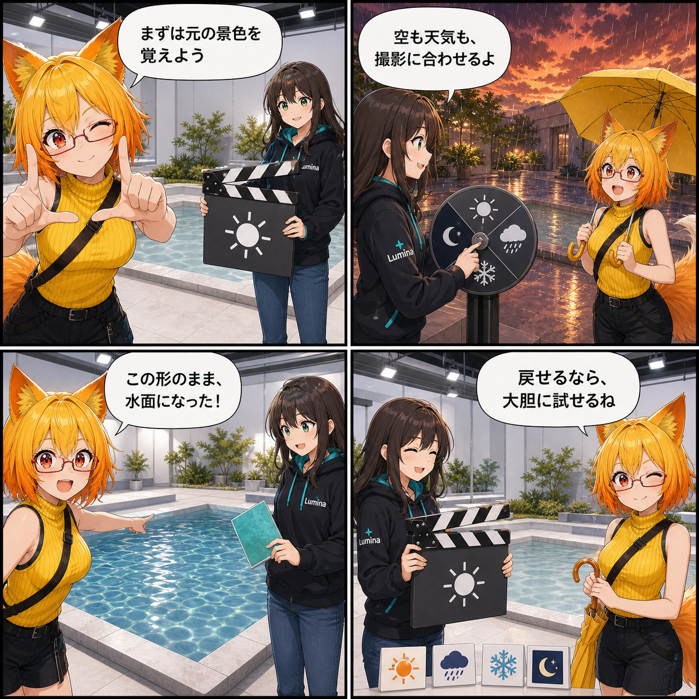

空も雨も、水面も。背景を撮影スタジオへ変えた日
背景が持つ元の空や霧を守りながら、撮影時だけ物理的な空・天候へ切り替え、既存背景の形を保ったまま水面も調整できる環境操作を実装しました。
main ブランチでは集計期間内に7件のコミットがありました。終了時点のHEADは dd364d9（VR環境UIの表示と水面操作を修正）、期間全体では142ファイル、84,582行追加、71,352行削除です。現在のViewer作業ツリーには未コミット差分がありますが、実装日を確定できないため本日の実績には含めていません。集計期間は 2026-08-30 03:00:00 JST から 2026-08-31 02:59:59 JST までです。
元の背景を基準に、撮影用の空へ切り替える
VBG背景を読み込んだ直後は、変換元が持つ空、霧、ライトを再現する「オリジナル」が既定です。今回、その基準を壊さず、必要なときだけ「物理的な空・天候」へ切り替えられる環境コントローラーを追加しました。
撮影向けには快晴、やわらかな昼、夕焼け、夜、霧、雨、嵐、雪の8プリセットを用意しました。Desktopでは時刻、雨雪の強さ、雲量・雲密度、霧、風、雷を連続調整でき、VRからも主要な環境項目を簡単に操作できます。
特定アセットをVBGへ閉じ込めない
難しかったのは、Weather Makerの表現力を使いながら、VBG自体をWeather Maker固有の形式にしないことでした。VBGには元背景と、空・天候・水面を再構成するための意味情報を保存し、Viewer側のBackend Adapterが実行時に物理天候へ変換します。
物理天候を選ぶまでWeather Maker Runtimeを止めておく遅延起動とし、既存のURP Rendererへ必要な機能だけを接続しました。雨、雪、風、雷などの音も別系統にせず、Viewerのマスター音量と環境音音量へ同期します。
川やプールは、形を変えずに水面へ
広いOcean相当の水面と、背景に元からある川・プール・水槽は同じ扱いにしていません。Ocean候補は大域水面として扱えますが、一般の背景パーツは選択したMeshの形を保ち、Materialだけを実行時の水面へ差し替えます。
水面のON/OFF、波、反射を調整でき、解除時は同じRendererとMaterial Slotへ元のMaterialを戻します。Overrideは元の materials/materials.json を変更せず、任意の materials/overrides.json としてVBGへ保存できます。名前に「water」があるだけで自動変換しないことも、安全側の重要な制約です。
技術的なポイント
- オリジナル、物理天候、Skyboxを分離した環境ソース
- 撮影向け8プリセットと、Desktop・VRそれぞれの調整UI
- VBGをBackend非依存に保つSemantic EnvironmentとAdapter構成
- 選択した背景Meshの形状を保つ水面Material Override
- 元Materialの復元と、別ファイルへ保存する非破壊設計
- 描画品質と環境音設定へ連動するRuntime制御
ほかにも進んだこと
- VRの3点歩行とIdleポーズ編集を改善
- 移動スタイルとアバターIdle連携を追加
- UIテーマ、撮影ポーズ、XR設定を更新
- VRモードのOpenXR初期化と終了処理を修正
- VR環境UIの表示と水面操作を修正
4コマの裏話
今回は同じ撮影セットを繰り返し映す「天候リハーサル」にしました。基準の景色、夕焼けの雨、形を保った水面、そして元の景色への復帰を同じ構図で比べることで、環境を置き換える機能ではなく、戻せる選択肢を増やした実装だと伝えています。
まとめ
VBG背景のオリジナル表現を既定として守りつつ、撮影用の空・時刻・天候へ切り替え、背景パーツの形を保った水面表現まで扱えるようになりました。元データと特定Backendを切り離したことで、見た目を大胆に試しても基準へ戻れる環境操作です。
本日のひとこと： 元へ戻せるから、空模様を大胆に試せる。